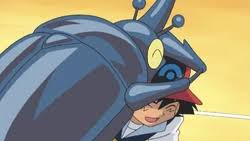
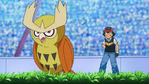

Ash's Pokemon In Johto
Ash Ketchum is in possession of a fairly large number of pokemon. Over his career He has had about 102 different species under his care. This website will list several pokemon which he acquired over his journey through pokemons many regions.
Hercross
Heracross is the Single Horn pokemon. It is a bug and fighting type pokemon. It is the first pokemon that Ash catches in the Johto region. It allowed Ash to catch it after Ash helped settle a dispute between its self and some pinsir. It has been shown to be a physically strong pokemon. This is likely why Ash called upon it for help when traveling regions other than Johto.

Noctowl
Noctowl is the Owl pokemon. It is a normal and flying type pokemon. It was the fifth pokemon ash caught in the Johto region. This particular Noctowl is a shiny pokemon. Shiny pokemon are pokemon with a different coloartion than their species typically has and are very rare. This is the only shiny pokemon Ash ever caught.
